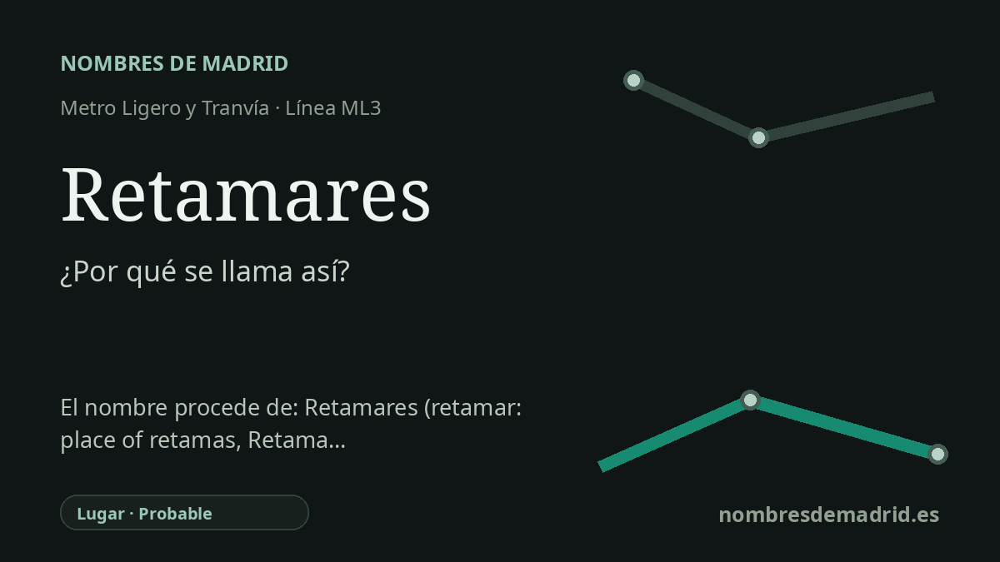

Publicado el · Investigación de Nombres de Madrid · Cómo verificamos cada origen · 12 fuentes consultadas
Respuesta rápida
Retamares toma el nombre de la zona de Retamares, en Pozuelo de Alarcón, junto a la M-511 y al complejo militar General Cavalcanti/Base de Retamares. El topónimo remite a retamar, palabra española que designa un terreno poblado de retamas.
La historia del nombre
La estación de Retamares toma el nombre de la zona de Retamares, en Pozuelo de Alarcón. La prueba de transporte es directa: Metro Ligero Oeste sitúa la parada de la ML3 junto a la carretera M-511 y la identifica como la más cercana al acuartelamiento General Cavalcanti, mientras que el Consorcio Regional de Transportes la registra como estación en superficie en la carretera de Boadilla-Carabanchel.
Detrás de ese nombre moderno hay una palabra antigua de paisaje. En español, retamar significa un sitio poblado de retamas, y retama designa varios arbustos similares a las escobas o genistas, frecuentes en España. La RAE explica retama por el árabe hispánico ratáma y este por el árabe clásico ratamah; por eso el topónimo se entiende mejor como un nombre botánico: 'los terrenos de retamas' o 'la zona de retamares'.
La geografía local refuerza esa lectura. La propia descripción del medio físico del Ayuntamiento de Pozuelo de Alarcón menciona el arroyo de Retamares como uno de los cursos que aportan agua al arroyo Meaques en el sur del municipio. Eso muestra que Retamares no fue solo una etiqueta de estación ni un apodo militar: forma parte del vocabulario territorial del borde suroeste de Pozuelo.
El nombre ganó mucha más visibilidad por el complejo militar situado junto a la parada. La Base de Retamares fue sede del Cuartel General del Mando de Fuerzas Aliadas de la OTAN en Madrid desde el 1 de septiembre de 1999 hasta el 30 de junio de 2013, según la Revista Española de Defensa del Ministerio de Defensa. En 2014 el Estado Mayor de la Defensa asumió las instalaciones y comenzó a trasladar allí mandos y unidades relevantes, entre ellos el Mando de Operaciones, el CIFAS y estructuras de ciberdefensa y operaciones especiales.
No hace falta atribuir el sentido colectivo al sufijo '-es': retamar ya significa 'lugar de retamas', y Retamares es un topónimo local pluralizado. No consta una resolución formal de denominación de la estación, así que el vínculo entre estación y paraje es probable, no está documentado por un acto oficial de nombramiento.